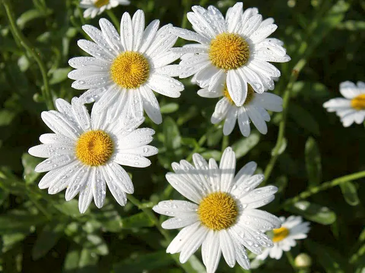

Originally developed by Luther Burbank, an American plant breeder of the 19th and 20th centuries, and named after California’s Mt. Shasta for its pure white petals, this hybrid is one whose botanical name (Leucanthemum x superbum) gives you a very good indication of what it can add to your garden and your inside vases. Superb indeed – from mid-spring to late summer, this perennial holds tall white flowers above strong green foliage, providing an easy pairing for many other spring and summer perennials.
Since those early days of development, Shasta daisies have been bred in varying, simple shades of yellow and white. The disk-like flowers can sport shaggy or smooth petals in either double or single formation. There are dwarf cultivars to fill pots or line the edges of garden beds, and standard cultivars to take center stage in a traditional border.
Americanmeadows© Hello World/Intro to HTML
